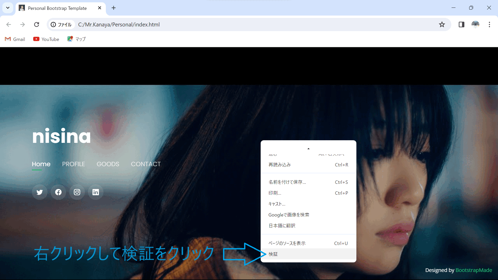

03 コードの説明
1,html,cssを使う上で知っておくと便利なこと
1,検証ツール
[検証ツール]とは、webページのhtmlやcssを確認することができるツールで、web制作には欠かせません。
使用する事で、作業効率を上げる事が出来ます。
検証ツールでできること
検証ツールでは以下のことが出来ます↓
1,webページのhtml,cssを確認、編集
2,モバイル、タブレット表示の確認
起動方法

1,コードを確認したいページをブラウザで開き、右クリック
2,「検証」というテキストをクリック※画像の青枠
またショートカットキーでも可能↓
[Ctrl + Shift + I]
検証ツールを起動すると、↓の画像のようになります
検証
webページの中から、検証したい部分を選択すると確認したいコードを瞬時に調べることが出来ます。
使い方は↓を参照！！！

２.検索と置き換え
コード内の文字列を検索する
Visual Studio Code（VSCode）にデフォルトで備わっているコード内の文字列検索機能は2つあります。
・F2 または Ctrl + F⇒表示中のファイルから文字列を検索する
・view（表示）メニューにある検索⇒全てのファイルから文字列を検索する
ファイル内のコードから文字列を検索する
「F2」キーまたは「Ctrl + F」でファイル内の文字列を検索可能にする検索窓が表示されます。
検索窓に検索文字列を入力するとヒット数と現在選択されているヒットした文字列の場所が表示されます。

検索にヒットした文字列はハイライトで表示され、選択中の文字列とその他のヒットした文字列で色分けされます。
検索結果を置き換え・全て置き換えをする
置き換えの機能を使うことで、文字列の検索でヒットした文字列を順番に見ながら置き換えたり、
全てのヒットした文字列を新しい文字列に置き換える事が可能です。
置き換えのフォームが表示されていない場合は、左側の矢印をクリックします

置き換えのフォームが表示されます。
文字列を置き換えるには、置き換えのフォームに置き換え後の文字列を入力し、
現在選択されている検索された文字列が置き換える対象であれば改行または左側の「置換」アイコンをクリックするか「Enter」を押します。
置き換える必要のない場所であった場合、検索結果を移動します。
置き換えフォームを選択している状態で連続して改行していけば、順番に文字列を置き換えていきます。
全ての文字列を一括で置き換えるには、右側の「全て置き換える」アイコンをクリックするかショートカットキー「Ctrl + Alt + Enter」を押します。
全ての文字列を置き換えると、検索結果のヒット数がなくなっている事が確認できます。
３.覚えておくと便利なショートカット
| ファイルを閉じる | Ctrl + W | ||||
|---|---|---|---|---|---|
| 新しいファイル作成 | Ctrl + N | ||||
| 一つ前のファイルの状態に戻る | Ctrl + Z | ||||
| 一つ先のファイルの状態に戻る | Ctrl + Shift + Z | ||||
| コピー | Ctrl + C | ||||
| ペースト | Ctrl + V | ||||
| 切り取り | Ctrl + X | ||||
| 全体選択 | Ctrl + Z | ||||
| 現在いるファイル内での検索 | Ctrl + F | ||||
2,ファイルの構成
3,コードの説明
２.navberの説明
navの説明と使い方
navタグの使い方を解説していきます。
ナビゲーションを作成する際に必要になります。
コードの書き方は次の通りです。

使い方は簡単で、ナビゲーションにしたい範囲をnavタグで囲うだけです。
そしてそのnavタグの中に、ulタグやliタグを使ってリストを作成します。
結果を表示すると次のようになります。

このようにサイトのナビゲーションが出来上がりました。
navタグを使うことで、ユーザーがページ内のコンテンツを探す手間を省くことができます。
便利なので、使い方を覚えておきましょう。
リストを横並びにする方法
次はリストを横並びにする方法です。
コードの書き方は次の通りです。
ナビゲーションのリストを横並びにするのは簡単で、cssで縦に並んでいるliタグに
「display: inline-block;」と指定するだけです。
liタグは本来ブロック要素なので、前後に改行が入り、縦に並んでしまいます。
それをインライン要素に変えることで、前後の改行が消え、縦並びから横並びに変更されます。
結果を表示すると、次のようになります。
縦に並んでいたリストが、横並びに変わりました。